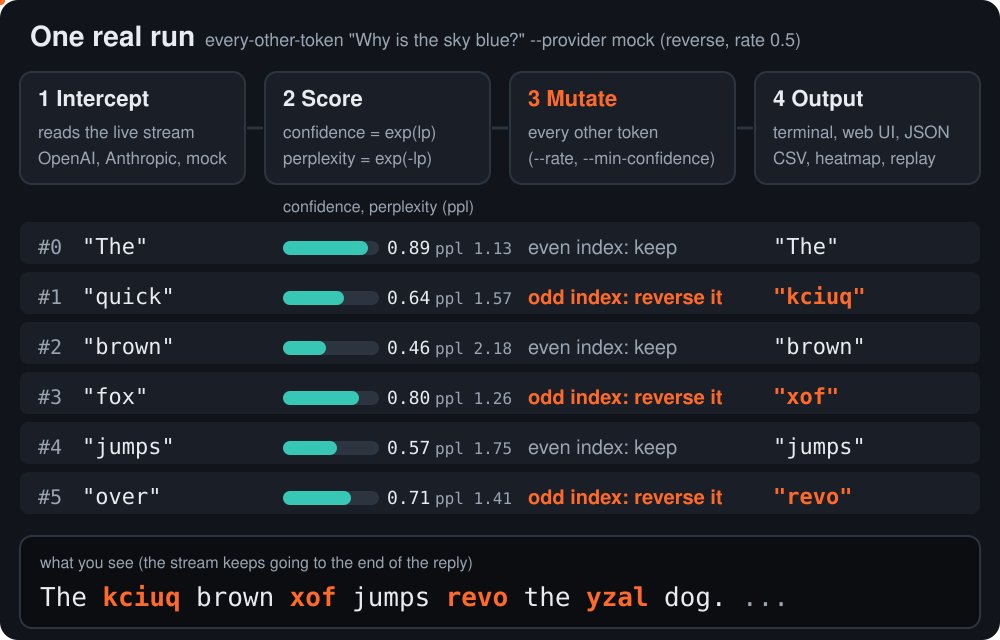
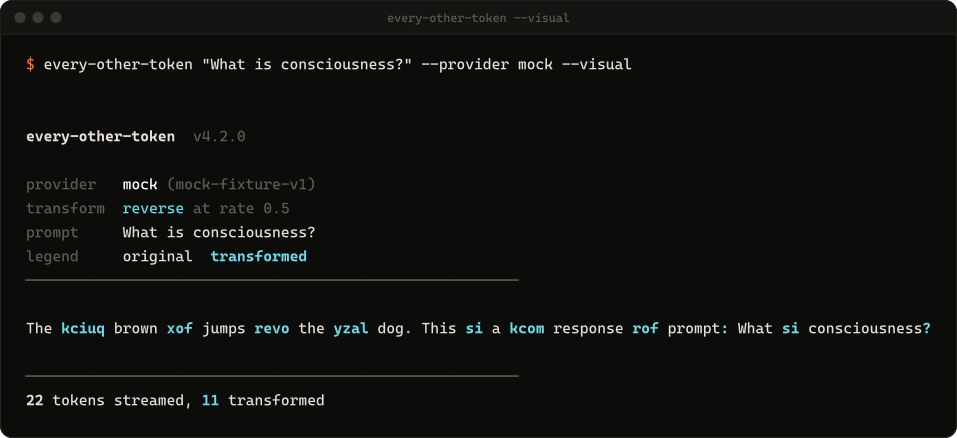
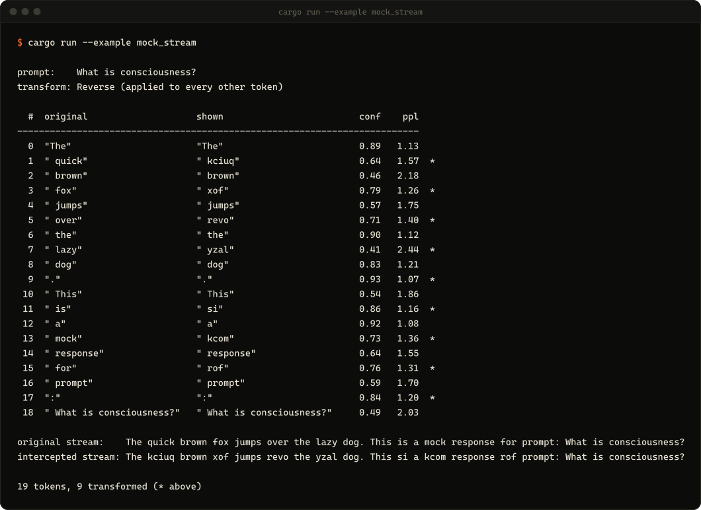
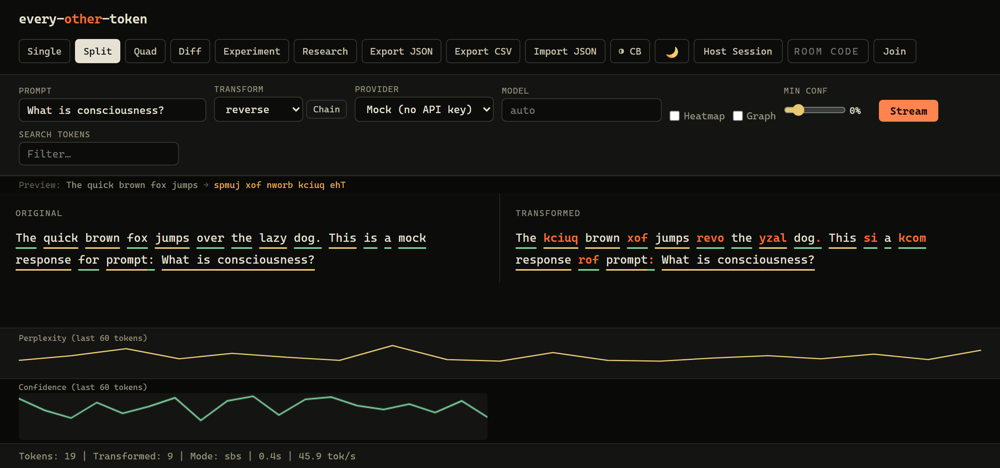

9가지 변환, 연결 가능
reverse, uppercase, mock, noise, chaos, scramble, delete, synonym, delay:N, 또는 reverse,uppercase 같은 체인.
every-other-token은 OpenAI나 Anthropic의 토큰 스트림이 도착하는 대로 그 위에 올라타는 Rust CLI 겸 웹 UI입니다. 한 토큰 걸러 하나씩(또는 원하는 비율만큼) 다시 쓰고, 모델이 각 토큰을 얼마나 확신했는지 알려 줍니다. 신뢰도 exp(logprob)와 퍼플렉서티 exp(-logprob)를 토큰마다 실시간으로 보여 줍니다.
every-other-token --web --provider mock의 실제 /stream 엔드포인트에서 녹화한 것입니다. mock 프로바이더는 고정된 답변과 고정된 logprobs를 실제 모델과 똑같은 가로채기 파이프라인에 통과시켜 재생하므로 API 키 없이 실행됩니다. OpenAI나 Anthropic에 연결하면 토큰과 수치는 모두 모델 자신의 것입니다.
네 단계를 mock 프로바이더에 reverse 변환(rate 0.5)을 적용한 실제 실행으로 보여 줍니다.

exp(logprob), 퍼플렉서티 exp(-logprob), 상위 후보들이 붙습니다.--rate), 또는 --min-confidence보다 낮은 토큰에만 변환을 적용합니다.Rust가 없어도 됩니다: Windows .exe(더블클릭하면 웹 UI가 열림), macOS Apple Silicon, macOS Intel, Linux x86_64. 또는 scoop bucket add mattbusel https://gitlab.com/mattbusel/scoop-bucket 후 scoop install every-other-token, brew install mattbusel/tap/every-other-token, cargo install every-other-token(Rust 1.81+)로도 설치할 수 있습니다.
$ cargo install every-other-token$ every-other-token "What is consciousness?" --provider mock --visual$ export OPENAI_API_KEY=sk-... # or ANTHROPIC_API_KEY with --provider anthropic $ every-other-token --web # http://localhost:8888
스트림은 도착하는 대로 출력됩니다. --visual을 붙이면 다시 쓴 토큰이 강조되고, --heatmap을 쓰면 대신 각 토큰을 중요도에 따라 색칠합니다.

가로챈 토큰 하나하나가 원문, 실제로 보인 텍스트, 인덱스, 다시 썼는지 여부, 신뢰도, 퍼플렉서티, 상위 후보를 담은 이벤트입니다. 라이브러리에서 바로 쓰거나, --json-stream으로 JSON Lines로 받거나, CSV, JSONL 또는 단독 실행되는 HTML 히트맵으로 내보낼 수 있습니다.

cargo run --example mock_stream 실행.--web은 빌드 단계도 외부 스크립트도 없는 단일 페이지를 띄웁니다. 단일, 분할, 쿼드(변환 네 개 동시 실행), OpenAI 대 Anthropic 비교, A/B 시스템 프롬프트, 연구용 대시보드, JSON 및 CSV 내보내기, 그리고 여러 사람이 스트리밍 도중 토큰을 함께 편집하는 협업 룸을 지원합니다.

reverse, uppercase, mock, noise, chaos, scramble, delete, synonym, delay:N, 또는 reverse,uppercase 같은 체인.
--rate 0.3은 원하는 비율로 다시 쓰기를 고르게 분산합니다. --seed는 무작위 변환을 재현 가능하게 만듭니다. --min-confidence는 모델이 확신하지 못한 토큰만 건드립니다.
--diff-terminal은 OpenAI와 Anthropic을 나란히 스트리밍하고 신뢰도 구조를 비교합니다.
같은 사용자 프롬프트에 두 가지 시스템 프롬프트를 여러 번 실행하고, 신뢰도 변화를 Welch t-검정(--significance)으로 검증합니다.
--research --runs 20은 헤드리스로 실행되어 퍼플렉서티, 신뢰도, 어휘 통계를 집계해 JSON으로 저장합니다.
어떤 세션이든 JSON으로 녹화해 두었다가 나중에 다시 재생할 수 있습니다. 예를 들어 모델 업데이트 후 동작 변화를 찾아낼 때 유용합니다.